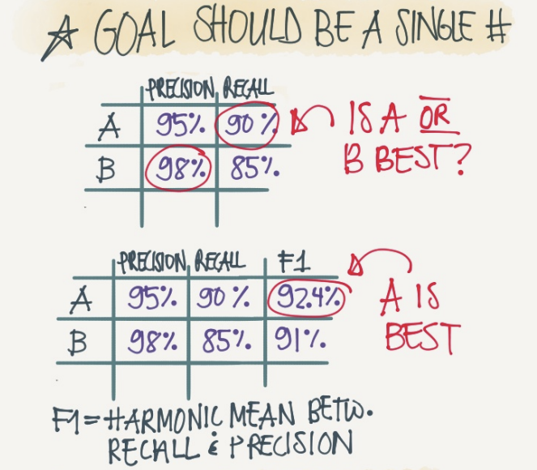

DeepLearning | 结构化机器学习项目
第一周：ML Strategy 1
Why ML Strategy
假设我们有一个分类器，其正确率只有90%，并不能满足我们的需求。
你可能会有很多想法去优化这个分类器，例如：
- 收集更多的训练数据。
- 增加训练数据的多样性。
- 训练更长的时间。
- 尝试另一种优化算法。
- 尝试规模更大或者更小的网络。
- 尝试dropout。
- 增加L2正则化。
- 修改网络结构，例如：
- 修改激活函数。
- 改变隐藏神经元的数目。
- ……
但是如果你选择了错误的优化方向，分类器的性能可能并无改善，甚至会越来越差。例如某个团队花了6个月的时间收集更多的训练数据，结果这些数据并没有改善模型的性能。
这时一个好的机器学习策略，可以使我们快速有效的判断哪些想法是靠谱的，是值得一试的，甚至提出新的想法，而哪些想法是可以放心舍弃的。
Orthogonalization
假设有一台老式电视机，有很多旋钮可以用来调整图像的各种性质。例如：
- 旋钮1：调整图像垂直方向的高度。
- 旋钮2：调整图像宽度。
- 旋钮3：调整图像的梯形角度。
- 旋钮4：调整图像的偏移量。
- 旋钮5：调整图像的旋转角度。
每个旋钮都有一个专有的功能，旋钮之间互不影响，这样我们就可以很容易调整图像到正确位置。但是如果有一个旋钮具有如下功能
那么图像的多个性质会同时变化，这样几乎不可能把图像调整到正确位置。
让每个旋钮只负责调整图像的某一个性质，这就是正交化思想的运用。
训练机器学习模型通常有以下四步：
- 优化其在训练集中的表现。
- 优化其在验证集中的表现。
- 优化其在测试集中的表现。
- 优化其在真实世界中的表现。
利用正交化的思想，针对不同的步骤给出一组特定的解决方法。
- 针对第一步，常用的方法有使用更大的网络、使用其他的优化算法等。
- 针对第二步，可以尝试加入正则化、增大训练集等。
- 针对第三步，可以扩大验证集。
- 针对第四步，尝试更改验证集或 cost function。
因此我们可以对症下药，采用不同的策略去解决不同阶段出现的问题。并且尽可能的保证该策略只对该问题起作用而不影响其他性能。
Single Number Evaluation Metric
如果我们设置一个单一数字作为模型的评估指标，那么我们可以很容易的判断出所用的优化策略使得模型的性能是变好了还是变差了，即我们的策略是否有效。
如上图所示：分类器A，经过某一优化策略之后，得到了分类器B。从 Precision 的角度看，B的性能优于A，优化策略起到了积极作用；但是从 Recall 的角度看，A的性能优于B，优化策略并没有起到作用，反而降低了模型性能。
这时我们便需要一个单一数字指标来帮助我们快速的判断这两个分类器的优劣。通过使用 F1 值，可以发现，分类器A的效果更好。
Satisficing and Optimizing Metric

假设我们设置 Accuracy 为单一数字评估指标，如上图所示：虽然分类器 C 的 Accuracy 要比 A 和 B 都高，但是其耗时过长，在实际应用中，我们可能更倾向于选择分类器 B。
有两种方案来改善这种情况：
- 将单一数字评估指标设置为 Accuracy 和 Running time 的组合，例如设置为
- 将 Running time 设置为满足指标，Accuracy 为优化指标。即在 Running time 满足一定阈值的情况下（例如小于100ms），寻找最优的 Accuracy。
通常我们会将N个指标中的某一个设置为优化指标，剩余N-1个设置为满足指标。
Train/Dev/Test Distributions
**要保证验证集和测试集来自于同一分布。**否则在验证集上表现良好的模型，在测试集上可能表现不佳。

建议做法是将数据随机打乱，然后划分验证集和测试集。
Size of the Dev and Test Sets
在数据量较小的情况下，按照传统数据划分方式【7/3或6/2/2原则】对数据进行划分是可以的。
但是在深度学习时代，数据量很大。流行的做法是将大量的数据分到训练集，然后少量的数据分到验证集和测试集。
When to Change Dev/Test Sets and Metrics?
确定了验证集和评估指标，就相当于确定了一个优化的目标。而有时候，目标的确立可能出错了，这时候就需要更改目标。
评估指标在于告诉你，哪个算法是更适合于你的应用。而如果评估指标无法正确的评估算法的好坏，就需要更换评估指标了。
例如有两个分类器A，B用于分辨图片是否为猫。分类器A的准确率为98%，但是它可能将色情图片也识别为猫；而分类器B的准确率为95%，但是它不会将色情图片识别为猫。此时从准确率出发，分类器A更优秀，但是从用户角度出发，分类器B更优秀。因此根据角度的不同，需要对评估指标做出调整。
同理，如果 Dev/Test 与实际应用场景中的数据不属于同一分布，会导致模型的真实表现很差。此时需要对 Dev/Test 做出修改，让它们能更好的反映实际要处理的数据。
Why Human-level Performance?
当一个机器学习模型的性能开始往人类水平努力时，进展是很快的。但过了一段时间，当这个算法表现比人类更好时，模型性能虽然仍会有提升，但是其提升的速度突然就变慢了。随着训练的推移，模型的性能始终无法超过某个理论上限。我们称这个上限为贝叶斯最优错误率(Bayes optimal error) 。如下图所示：

一般认为贝叶斯最优错误率是理论上可能达到的最优错误率。最优准确率一般不是100%。举个例子来解释一下原因，比如对于语音识别任务，有一些音频就是很嘈杂，无论是人还是机器，通过任何技术都无法辨识出其所说的内容。
模型优化的进程在其超过人类表现之后就缓慢下来，原因主要有两点：
- 当模型的性能不如人的表现时，我们可以根据人们自身的经验分析错误的原因并指导模型进行修正，其总能通过一些方法或者技术来有效的提高其性能，一旦模型性能超过人的表现，这些方法和技术就没那么好用了，我们就失去了优化的方向和指导。举个易懂的例子，当你的武功比你师傅还要高时，你的师傅已经没有什么可以教你的了。
- 人的表现在很多任务中接近于贝叶斯最优错误率。因此，当模型的性能超过人类表现时，已经没有太多的优化空间了。
Avoidable Bias
假设我们用人的表现近似代替贝叶斯最优错误率。
以猫图片分类任务为例，假设人的错误率是1%，模型在训练集上的错误率是8%，在验证集上的错误率是10%。那么我们可以看出模型拟合的并不好，模型在训练集上的表现和人的表现差了7%，因此首先我们应该着眼于降低模型的偏差，例如训练更大的网络或者迭代时间更久一点。

保持模型在训练集和验证集上的错误率不变，假设人的错误率为7.5%。在这种情况下，模型已经拟合的相当不错了，我们应该专注于降低模型的方差，例如使用正则化或者扩大训练集。
因此在不同情况下，我们需要针对性的使用不同的优化策略。
通常将模型在训练集上的错误率与贝叶斯最优错误率之间的差距称为可避免的偏差。
模型在训练集上的错误率不可能小于贝叶斯最优错误率，除非出现了过拟合。
Understanding Human-level Performance
当有多个人类水平表现时，以医学CT图像的分类任务为例，假设有：
- 没有医学背景的人的错误率为3%。
- 普通的放射科医生的错误率为1%。
- 经验丰富的放射科医生的错误率为0.7%。
- 经验丰富的放射科医生团队的错误率为0.5%。
那么这种情况下，我们该如何定义人的表现？在人类表现很好的领域（例如计算机视觉、自然语言处理等），我们通常用人的表现代替贝叶斯最优错误率，此时人的表现被定义为0.5%的错误率，即人类所能达到的最低错误率。但是从算法应用的层面上来讲，我们可能并不需要0.5%那么苛刻的条件，1%即可满足算法部署的要求，此时人的表现就可定义为1%的错误率。
因此，定义人的表现取决于我们的目的。如果我们只是希望我们的算法可以优于没有医学背景的人即可，那么人的表现就可以被定义为3%的错误率。

当模型的性能超过人的表现时，我们不知道其距离贝叶斯最优错误率有多远，因此也无法判断是采用降低偏差的策略还是降低方差的策略，我们失去了优化的方向。这也是模型性能曲线在超过人的表现之后变得平缓的原因。
Surpassing Human-level Performance
当模型的性能超过人的表现的时候，对模型进行优化就会变得越来越困难。
但是目前在许多领域，由于可以获取到大量的数据，机器学习模型的表现已经可以超越人类水平。
Improving your Model Performance
想要让一个监督学习算法达到实用，需要完成两件事情：
- 首先，对训练集的拟合很好，这可以看成是可避免偏差很低。
- 其次，除了在训练集中做得很好，还需要推广到开发集和测试集也很好，这就是说方差不是太大。
要让可避免偏差降低，可以通过如下方法：
- 使用更大规模的模型
- 训练更久或使用更好的优化算法
- 寻找更好的 NN 结构
- 搜索其他的超参数【比如替换激活函数，改变层数等】
要让方差降低，可以通过如下方法：
- 取得更多的数据
- 正则化
- 寻找更好的 NN 结构
- 搜索其他的超参数【比如替换激活函数，改变层数等】
第二周：ML Strategy 2
Carrying Out Error Analysis
对模型输出结果中的错误案例进行分析，以帮助我们更高效的寻找优化模型的方向。
以一个猫图片分类器为例，假设该分类器的错误率为10%。导致错误的一个原因是分类器会将部分的狗识别为猫，此时是否应该使用更多的狗图片作为训练数据？需要进行错误分析，做法如下：

我们可以挑选出100个该分类器识别错误的图片。统计这100张图片错误的原因。比如可能有8%的图片是因为把狗的照片误分为猫的照片，30%是因为把狮子识别成了猫，40%是因为图片过于模糊从而导致识别错误，剩余22%则是因为图片加了各种各样的滤镜。据此，我们便可把精力放在优化模型对模糊图像的识别以及对狮子图片的识别上。如果我们把过多的精力集中在优化模型对狗图片的识别上，即使我们纠正了所有对狗照片的识别，也只能使模型的错误率下降0.8%而已，到达9.2%的错误率，是一个性价比很低的选择。
Cleaning Up Incorrectly Labeled Data

对于测试集/验证集中错误标记的数据也应该被纳入到错误分析的统计之中，通过其占错误数据的百分比来决定修正错误标记任务的优先级。对于验证集和测试集中的错误标记则通常需要人为修正，并且修改需要同时作用在验证集和测试集上，以确保验证集和开发集服从同一分布。
对于训练集中随机出现的错误标记，深度学习往往可以自行克服这个问题。因为训练集通常很大，而错误标记占比很小。 所以验证集和测试集的修改操作，并不需要作用到训练集上。验证集/测试集与训练集服从不同分布是正常的。
深度学习算法对随机错误表现出健壮性，但是对于系统错误【比如将所有白色的狗都标记为猫，那么之后分类器就会将所有白色的狗识别为猫】无法做到忽视。